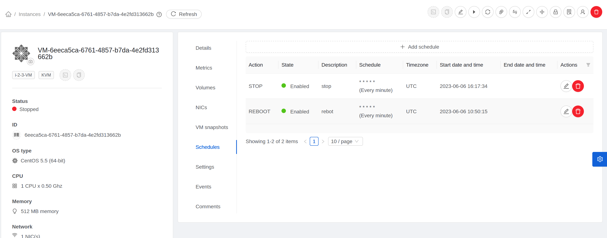
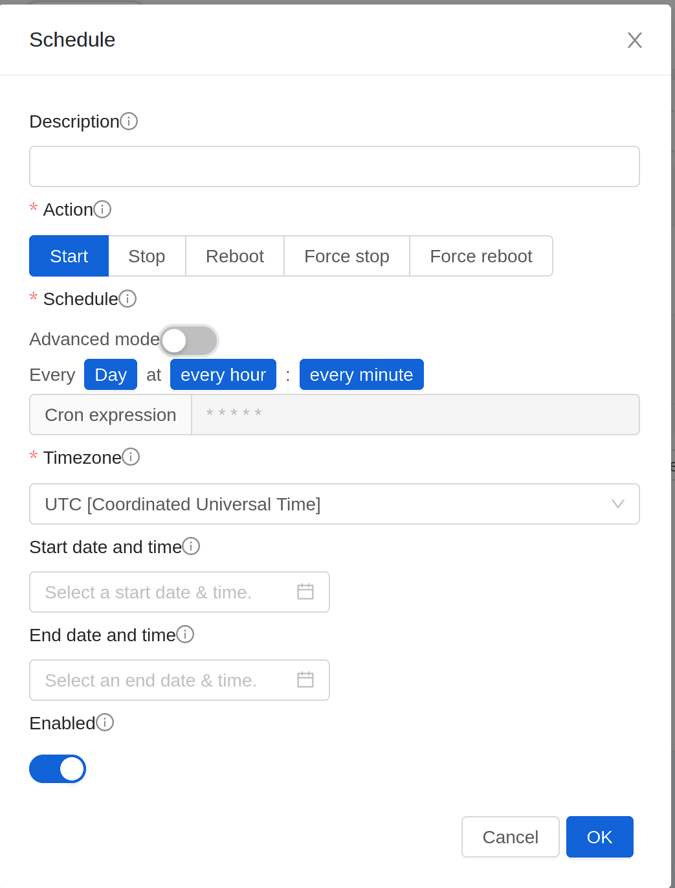
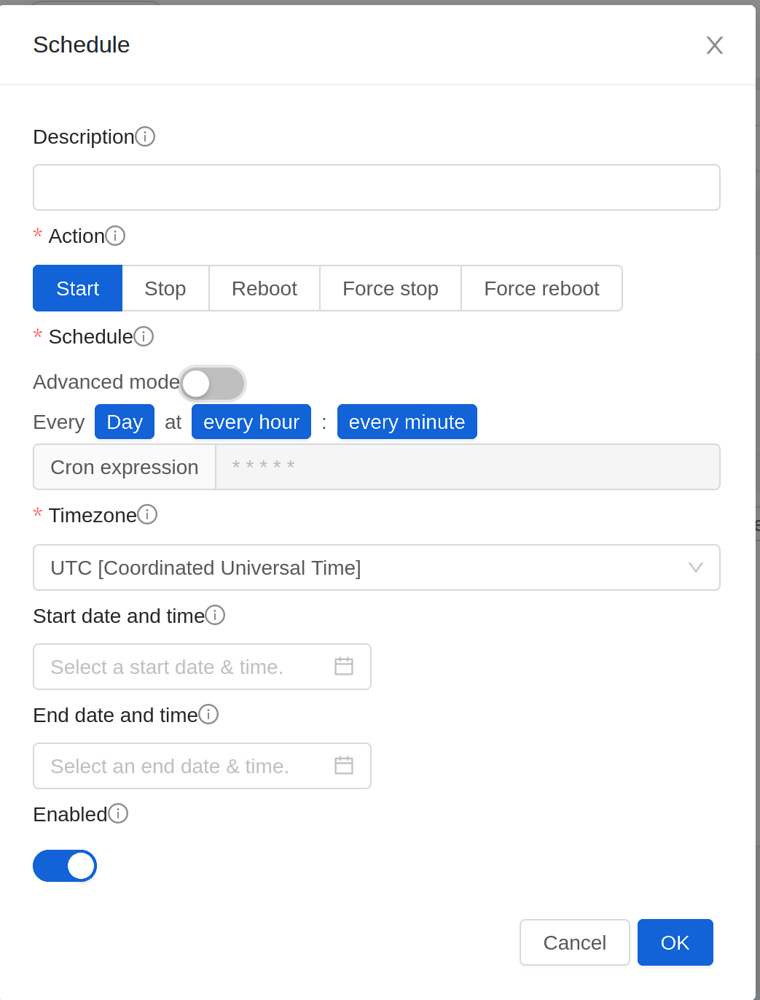
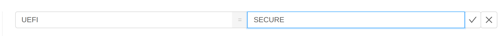
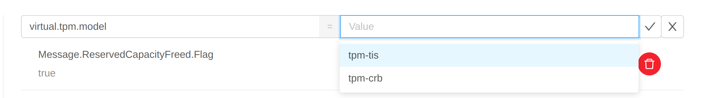
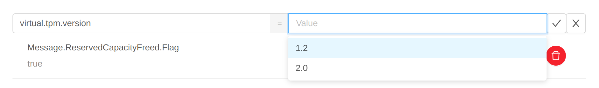
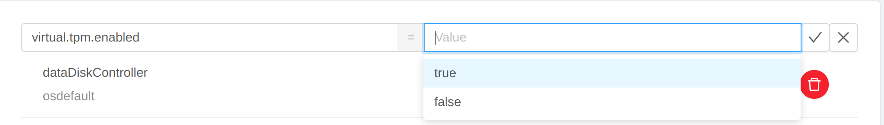

Instance Management#
Scheduling operations on an Instance#
After an Instance is created, you can schedule Instance lifecycle operations using cron expressions. The operations that can be scheduled are:
Start
Stop
Reboot
Force Stop
Force Reboot
To schedule an operation on an Instance through the UI:
Log in to the UI as a User or admin.
In the left navigation, click Instances.
Click the Instance that you want to schedule the operation on.
On the Instance details page, click the Schedule button. 
Click on Add schedule button to add a new schedule or click on Edit button
 to edit
an existing schedule. 
to edit
an existing schedule. Configure the schedule as per requirements:
Description: Enter a description for the schedule. If left empty, it’s generated on the basis of action and the schedule.
Action: Select the action to be triggered by the schedule. Can’t be changed once the schedule has been created.
Schedule: Select the frequency using cron format at which the action should be triggered. For example, * * * * * will trigger the job every minute.
Timezone: Select the timezone in which the schedule should be triggered.
Start Date: Date at the specified time zone after which the schedule becomes active. Defaults to current timestamp plus 1 minute.
End Date: Date at the specified time zone before which the schedule is active. If not set, schedule won’t become inactive.
Note
It’s not possible to remove the end date once it’s configured.
Click OK to save the schedule.
Note
If multiple schedules are configured for an Instance and the scheduled time coincides, then only the schedule which was created first will be executed and the rest will be skipped.
Changing the Instance Name, OS, or Group#
After an Instance is created, you can modify the display name, operating system, and the group it belongs to.
To access an Instance through the UI:
Log in to the UI as a User or admin.
In the left navigation, click Instances.
Select the Instance that you want to modify.
Click the Stop button to stop the Instance.
Click Edit.
Make the desired changes to the following:
Display name: Enter a new display name if you want to change the name of the Instance.
OS Type: Select the desired operating system.
Group: Enter the group name for the Instance.
Click Apply.
Instance delete protection#
Zergaw CloudStack protects instances from accidental deletion using a delete protection flag, which is false by default. When delete protection is enabled for an instance, it cannot be deleted through the UI or API. It can only be deleted after removing delete protection from the instance.
Delete protection can be enabled for an instance via updateVirtualMachine API.
cmk update virtualmachine id=<instance id> deleteprotection=true
To remove delete protection, use the following command:
cmk update virtualmachine id=<instance id> deleteprotection=false
To enable/disable delete protection for an instance using the UI, follow these steps:
Log in to the UI as a User or admin.
In the navigation menu on the left, click Instances under Compute.
Choose the Instance for which you want to enable/disable delete protection.
Click on the Edit button
Toggle the Delete Protection switch to enable or disable delete protection.
Click Ok button to save the changes.
Note
The instance delete protection is only considered when the instance is being deleted through the UI or via destroyVirtualMachine or expungeVirtualMachine API. If the domain/project is deleted, the instances under the domain/project will be deleted irrespective of the delete protection status.
Changing the Service Offering for an Instance#
To upgrade or downgrade the level of compute resources available to an Instance, you can change the Instance’s compute offering.
Log in to the UI as a User or admin.
In the left navigation, click Instances.
Choose the Instance that you want to work with.
(Skip this step if you have enabled dynamic Instance scaling; see CPU and Memory Scaling for Running Instances.)
Click the Stop button to stop the Instance.
Click the Change Service button.
The Change service dialog box is displayed.
Select the offering you want to apply to the selected Instance.
Click OK.
CPU and Memory Scaling for Running Instances#
It is not always possible to accurately predict the CPU and RAM requirements when you first deploy an Instance. You might need to increase these resources at any time during the life of an Instance. You can dynamically modify CPU and RAM levels to scale up these resources for a running Instance without incurring any downtime.
Dynamic CPU and RAM scaling can be used in the following cases:
User Instances on hosts running.
QemuGuestAgent Tools must be installed on the virtual machine.
The new requested CPU and RAM values must be within the constraints allowed by the hypervisor and the Instance operating system.
The instance should be using a custom compute offering.
Enable Dynamic Scaling for Existing Instances#
If you are upgrading from a previous version of CloudStack, and you want your existing Instances created with previous versions to have the dynamic scaling capability, update the Instances using the following steps:
Install QemuGuestAgent tools on each Instance if they are not already installed.
Stop the Instance.
Click the Edit button.
Click the Dynamically Scalable checkbox.
Click Apply.
Restart the Instance.
Configuring Dynamic CPU and RAM Scaling#
The following options need to be enabled to make an Instance dynamically scalable
Template from which Instance is created needs to have QemuGuestAgent Tools and it should have ‘Dynamically Scalable’ flag set to true.
Service Offering of the Instance should have ‘Dynamic Scaling Enabled’ flag set to true. By default, this flag is true when a Service Offering is created.
While deploying an Instance, User or Admin needs to mark ‘Dynamic Scaling Enabled’ to true. By default this flag is set to true.
If any of the above settings are false then the Instance cannot be configured as dynamically scalable.
How to Dynamically Scale CPU and RAM#
To modify the CPU and/or RAM capacity of an Instance, you need to change the compute offering of the Instance to a new compute offering that has the desired CPU value and RAM value and ‘Dynamic Scaling Enabled’ flag as true. You can use the same steps described above in “Changing the Service Offering for an Instance”, but skip the step where you stop the Instance.
When you submit a dynamic scaling request, the resources will be scaled up on the current host if possible. If the host does not have enough resources, the Instance will be live migrated to another host in the same cluster. If there is no host in the cluster that can fulfill the requested level of CPU and RAM, the scaling operation will fail. The Instance will continue to run as it was before.
Limitations#
Zergaw CloudStack will not check to be sure that the new CPU and RAM levels are compatible with the OS running on the Instance.
On Instances running Linux 64-bit and Windows 7 32-bit operating systems, if the Instance is initially assigned a RAM of less than 3 GB, it can be dynamically scaled up to 3 GB, but not more. This is due to a known issue with these operating systems, which will freeze if an attempt is made to dynamically scale from less than 3 GB to more than 3 GB.
On KVM, not all versions of Qemu/KVM may support dynamic scaling. Some combinations may result CPU or memory related failures during Instance deployment.
Affinity Groups#
By defining affinity groups and assigning Instances to them, the User or administrator can influence (but not dictate) which Instances should run on either the same or separate hosts. This feature allows Users to specify the affinity groups to which an Instance can belong. Instances with the same “host anti-affinity” type won’t be on the same host, which serves to increase fault tolerance. If a host fails, another Instance offering the same service (for example, hosting the User’s website) is still up and running on another host. It also allows Users to specify that Instances with the same “host affinity” type must run on the same host, which can be useful in ensuring connectivity and low latency between guest Instances. “non-strict host anti-affinity” is similar to, but more flexible than, “host anti-affinity”. In that case Instances are deployed to different hosts as long as there are enough hosts to satisfy the requirement, otherwise they might be deployed to the same host. “non-strict host affinity” is similar to, but more flexible than, “host affinity”, Instances are ideally placed together in the same host, but only if possible.
The scope of an affinity group is on an Account level.
Creating a New Affinity Group#
To add an affinity group:
Log in to the UI as an administrator or User.
In the left navigation bar, click Affinity Groups.
Click Add affinity group. In the dialog box, fill in the following fields:
Name. Give the group a name.
Description. Any desired text to tell more about the purpose of the group.
Type. Zergaw CloudStack supports four types of affinity groups. “host anti-affinity”, “host affinity”, “non-strict host affinity” and “non-strict host anti-affinity”. “host anti-affinity” indicates that the Instances in this group must not be placed on the same host with each other. “host affinity” on the other hand indicates that Instances in this group must be placed on the same host. “non-strict host anti-affinity” indicates that Instances in this group should be deployed to different hosts. “non-strict host affinity” indicates that Instances in this group should not be deployed to same hosts.
Assign a New Instance to an Affinity Group#
To assign a new Instance to an affinity group:
Create the Instance as usual, as described in “Creating Instances”. In the Add Instance wizard, there is a new Affinity tab where you can select the affinity group.
Change Affinity Group for an Existing Instance#
To assign an existing Instance to an affinity group:
Log in to the UI as an administrator or User.
In the left navigation bar, click Instances.
Click the name of the Instance you want to work with.
Stop the Instance by clicking the Stop button.
Click the Change Affinity button.

View Members of an Affinity Group#
To see which Instances are currently assigned to a particular affinity group:
In the left navigation bar, click Affinity Groups.
Click the name of the group you are interested in.
Click View Instances. The members of the group are listed.
From here, you can click the name of any Instance in the list to access all its details and controls.
Delete an Affinity Group#
To delete an affinity group:
In the left navigation bar, click Affinity Groups.
Click the name of the group you are interested in.
Click Delete.
Any Instance that is a member of the affinity group will be disassociated from the group. The former group members will continue to run normally on the current hosts, but if the Instance is restarted, it will no longer follow the host allocation rules from its former affinity group.
Changing an Instance’s Base Image#
Every Instance is created from a base image, which is a Template or ISO which has been created and stored in CloudStack. Both cloud administrators and end Users can create and modify Templates, ISOs, and Instances.
In Zergaw CloudStack, you can change an existing Instance’s base image from one Template to another, or from one ISO to another. (You can not change from an ISO to a Template, or from a Template to an ISO).
For example, suppose there is a Template based on a particular operating system, and the OS vendor releases a software patch. The administrator or User naturally wants to apply the patch and then make sure existing Instances start using it. Whether a software update is involved or not, it’s also possible to simply switch an Instance from its current Template to any other desired Template.
To change an Instance’s base image, call the restoreVirtualMachine API command and pass in the Instance ID and a new Template ID. The Template ID parameter may refer to either a Template or an ISO, depending on which type of base image the Instance was already using (it must match the previous type of image). When this call occurs, the Instance’s root disk is first destroyed, then a new root disk is created from the source designated in the Template ID parameter. The new root disk is attached to the Instance, and now the Instance is based on the new Template.
You can also omit the Template ID parameter from the restoreVirtualMachine call. In this case, the Instance’s root disk is destroyed and recreated, but from the same Template or ISO that was already in use by the Instance.
Instance Settings for Virtual Trusted Platform Module (vTPM)#
Trusted Platform Module (TPM) is a standard for a secure cryptoprocessor, which can securely store artifacts used to authenticate the platform, including passwords, certificates, or encryption keys. TPM is required by recent Windows releases.
Virtual Trusted Platform Module (vTPM) is the software-based representation of physical TPM. Zergaw CloudStack supports vTPM for instances running on KVM.
 UEFI setting
On Vmware, the boot type must be set to UEFI. Boot mode can be SECURE (recommended) or LEGACY.
On KVM, it is recommended to set boot type to UEFI, and boot mode to SECURE.
UEFI is required for some Windows versions.
 TPM model for KVM. There are two options:
tpm-tis, TIS means TPM Interface Specification;
tpm-crb, CRB means Command-Response Buffer.
 TPM version for KVM. There are two options:
2.0. This is the default TPM version. It is used when version is not specified or invalid.
1.2. This is not supported with CRB model.

Configuring Multiple IP Addresses on a Single NIC#
Zergaw CloudStack provides you the ability to associate multiple private IP addresses per Guest Instance NIC. In addition to the primary IP, you can assign additional IPs to the Guest Instance NIC. This feature is supported on all the network configurations: Basic, Advanced, and VPC. Security Groups, Static NAT and Port forwarding services are supported on these additional IPs.
As always, you can specify an IP from the guest subnet; if not specified, an IP is automatically picked up from the Guest Instance subnet. You can view the IPs associated with for each Guest Instance NICs on the UI. You can apply NAT on these additional guest IPs by using network configuration option in the CloudStack UI. You must specify the NIC to which the IP should be associated.
Use Cases#
Some of the use cases are described below:
Network devices, such as firewalls and load balancers, generally work best when they have access to multiple IP addresses on the network interface.
Moving private IP addresses between interfaces or instances. Applications that are bound to specific IP addresses can be moved between instances.
Hosting multiple SSL Websites on a single instance. You can install multiple SSL certificates on a single instance, each associated with a distinct IP address.
Guidelines#
To prevent IP conflict, configure different subnets when multiple networks are connected to the same instance.
Assigning Additional IPs to an instance#
Log in to the UI.
In the left navigation bar, click Instances.
Click the name of the instance you want to work with.
Click the NICs tab.
Click View Secondary IPs.
Click Acquire New Secondary IP, and click Yes in the confirmation dialog.
You need to configure the IP on the Guest Instance NIC manually. Zergaw CloudStack will not automatically configure the acquired IP address on the instance. Ensure that the IP address configuration persist on instance reboot.
Within a few moments, the new IP address should appear with the state Allocated. You can now use the IP address in Port Forwarding or StaticNAT rules.
Port Forwarding and StaticNAT Services Changes#
Because multiple IPs can be associated per NIC, you are allowed to select a desired IP for the Port Forwarding and StaticNAT services. The default is the primary IP. To enable this functionality, an extra optional parameter ‘vmguestip’ is added to the Port forwarding and StaticNAT APIs (enableStaticNat, createIpForwardingRule) to indicate on what IP address NAT need to be configured. If vmguestip is passed, NAT is configured on the specified private IP of the instance. if not passed, NAT is configured on the primary IP of the instance.